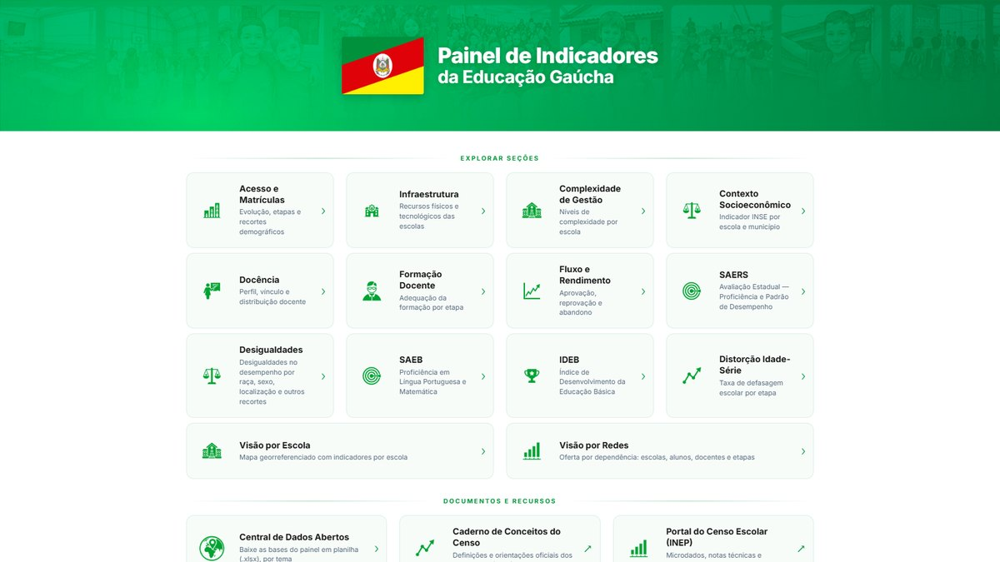
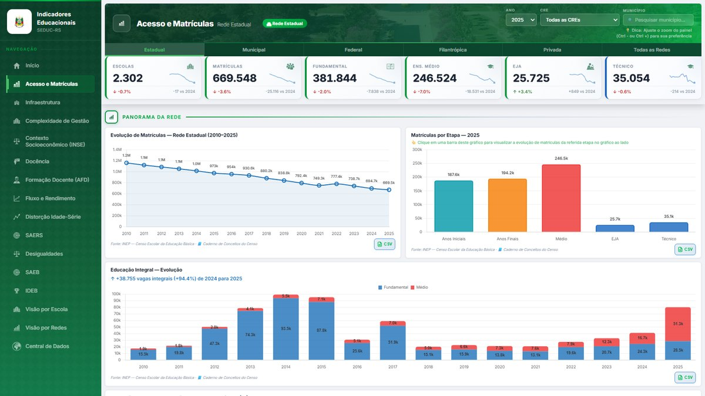
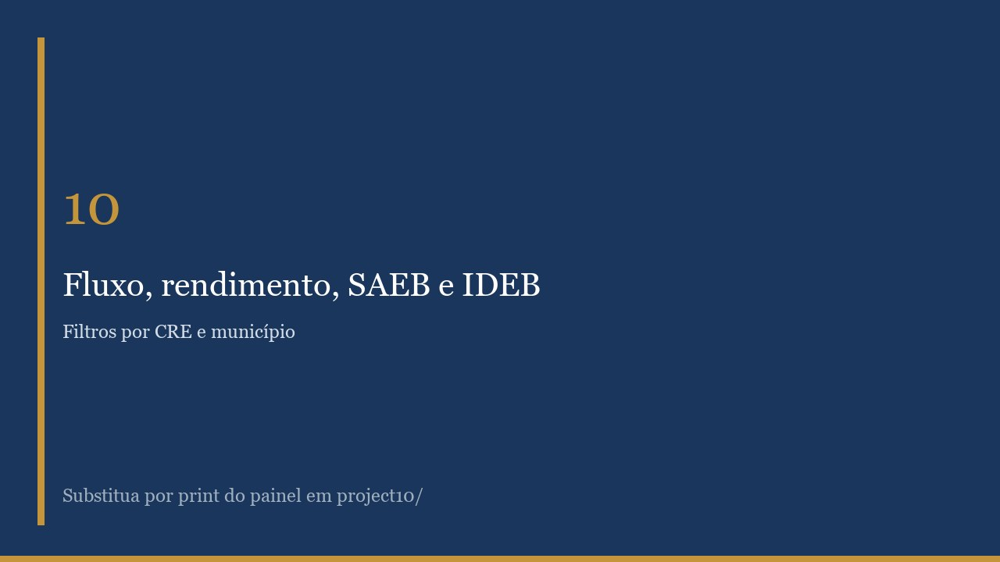
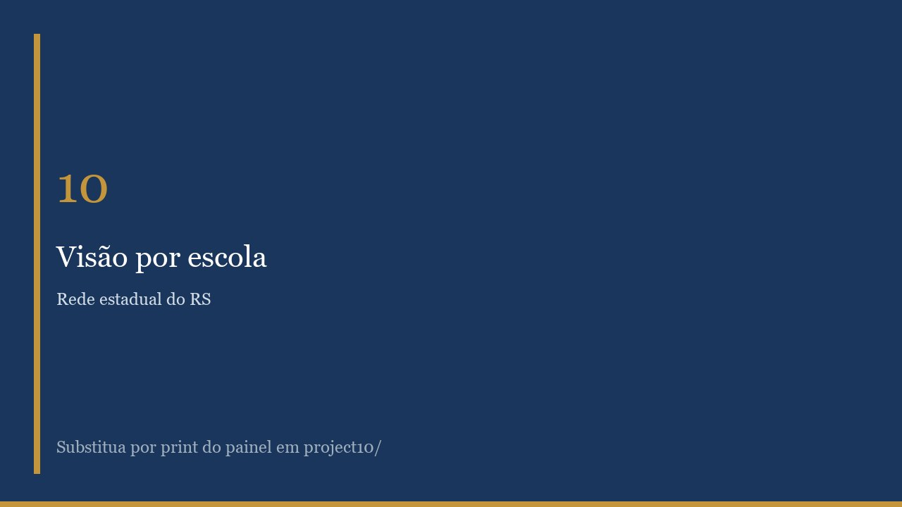

Painel aberto de acesso, permanência, fluxo, rendimento e desigualdades da rede estadual
O contrato UNESCO ED00585/2026 (SA-729/2026, Projeto 914BRZ1153) pede painéis analíticos e gerenciais para monitorar, avaliar e tornar transparentes programas, políticas e indicadores da SEDUC-RS. A rede estadual tem cerca de 2.294 escolas e 654 mil matrículas, em 497 municípios e 30 Coordenadorias Regionais.
Os dados que descrevem essa rede existem e são públicos (Censo Escolar, aprovação e abandono, defasagem idade-série, SAEB, IDEB e a avaliação gaúcha, o SAERS). O problema é o formato: microdados grandes, layouts que mudam de ano para ano e pouco usáveis por quem não é especialista. A Secretaria precisava de um painel aberto em que gestor, escola, pesquisador e cidadão lessem a mesma rede, no estado, na coordenadoria, no município e na escola.




Como atividades executadas, destaca-se o Painel de Indicadores Educacionais, que traduz esses microdados em leitura corrente. Cobre acesso, permanência, fluxo, rendimento e desigualdades, com recortes territoriais e sociodemográficos:
A consultoria se insere num conjunto mais amplo previsto no contrato (Todo Jovem na Escola, metas institucionais, proteção à trajetória com a PROCERGS, clima escolar e Pé de Meia RS), ainda em elaboração. Já entregue, no mesmo contrato, está o Painel de Governança da Educação: o acompanhamento mensal para o Governador, com frequência, aulas dadas, notas e execução do Agiliza.
O painel está publicado em indicadores.educacao.rs.gov.br e em uso na rede. Gestores da Secretaria, coordenadorias, escolas, pesquisadores e o público consultam o mesmo conjunto — o que antes exigia tratar microdados. A cobertura é a rede estadual inteira: 497 municípios, cerca de 2.294 escolas e 654 mil matrículas.